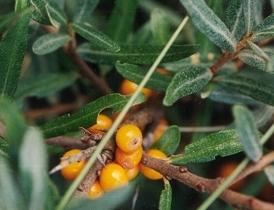
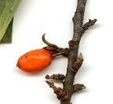

|
| Die Früchte werden im September reif.
Sie sind essbar und werden von Vögeln verbreitet.
 |  Die orangeroten Steinfrüchte sehen aus wie Beeren. Sie sind klein und rund oder eiförmig.
Das saftige Fruchtfleisch ist sehr sauer und enthält viel Vitamin C.
Im Innern ist ein harter Steinkern.
|